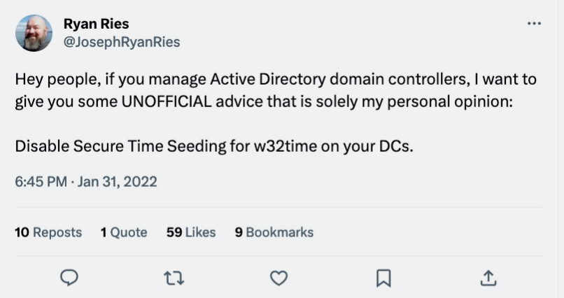

November 20th, 2023
Secure Time Seeding is a feature of the Windows Time service (w32time) that was introduced with Server 2016.
The feature is documented in a couple of places, but primarily here.
There was also an Ars Technica article published recently in which one of my Twitter tweets was quoted:
